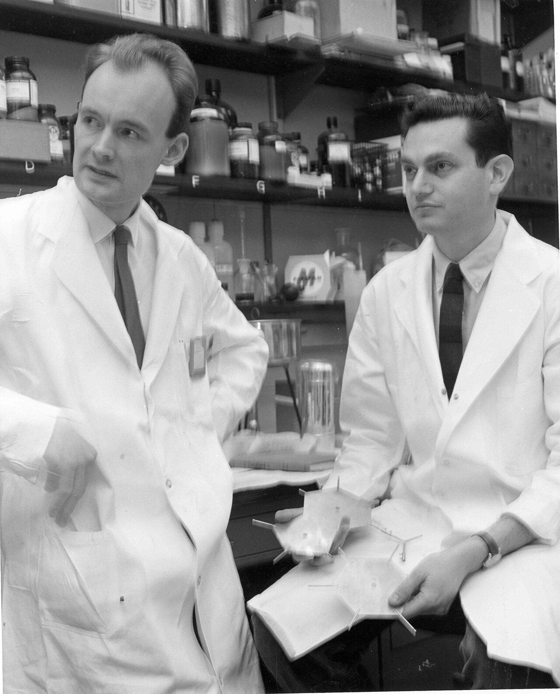

基因指导蛋白质的合成（下）：翻译与中心法则
本期导读
基因指导蛋白质的合成（下） · 密码子 · 6∶3∶1

视频原话 · 导读3 句
- 同学们好！这节课梳理人教版必修二第四章第一节的下半部分——翻译与中心法则。8.1s
- 高考常考密码子和反密码子、翻译过程的图像、数量计算和中心法则。7.3s
- 我们按八个考点梳理，每个考点都讲清楚怎么考、怎么做。5.5s
翻译的概念与条件01#
游离在细胞质中的氨基酸，以 mRNA 为模板合成具有一定氨基酸顺序的蛋白质的过程
| 项目 | 内容 |
|---|---|
| 场所 | 核糖体 |
| 模板 | mRNA |
| 原料 | 21 种氨基酸 |
| 运载工具 | tRNA |
| 产物 | 多肽链 → 盘曲折叠成蛋白质 |
易错
直接产物是多肽，不一定有生物活性；碱基配对发生在 mRNA 与 tRNA 之间
视频原话4 句
- 考点一，翻译：游离在细胞质中的各种氨基酸，以 mRNA 为模板合成具有一定氨基酸顺序的蛋白质。9.8s
- 场所：核糖体；模板：mRNA；原料：21 种氨基酸；运载工具：tRNA；还需要酶和能量。10.2s
- 产物：多肽链，再经过盘曲折叠，形成有一定空间结构的蛋白质。6.7s
- 易错：翻译的直接产物是多肽，不一定直接具有生物活性；翻译时碱基配对发生在 mRNA 和 tRNA 之间。10.5s
密码子02#
- 164 种起始密码子 AUG（也编码甲硫氨酸）；终止密码子 UAA、UAG、UGA
- 2简并一种氨基酸可对应一种或几种密码子，增强容错性
- 3通用几乎所有生物共用一套密码子 → 生物有共同起源
易错
密码子在 mRNA 上；终止密码子一般不决定氨基酸（特殊情况下 UGA 编码硒代半胱氨酸）
视频原话5 句
- 考点二，密码子：mRNA 上决定一个氨基酸的 3 个相邻碱基。6.2s
- 密码子共有 64 种。AUG 是起始密码子，也编码甲硫氨酸；UAA、UAG、UGA 是终止密码子。9.8s
- 一种氨基酸可以对应一种或几种密码子，这叫密码子的简并，能增强容错性。7.4s
- 密码子在几乎所有生物中都是通用的，这说明生物有共同的起源。6.6s
- 易错：终止密码子一般不决定氨基酸；但在特殊情况下，UGA 可以编码硒代半胱氨酸。8.6s
tRNA与反密码子03#
- 1结构三叶草形，一端携带氨基酸，另一端有反密码子
- 2配对反密码子与密码子互补配对
- 3专一一种 tRNA 只转运一种氨基酸；一种氨基酸可由一种或几种 tRNA 转运
易错
密码子在 mRNA 上，反密码子在 tRNA 上；tRNA 由许多核苷酸组成，不是只有 3 个碱基
视频原话4 句
- 考点三，tRNA。tRNA 呈三叶草形，一端是携带氨基酸的部位，另一端有 3 个碱基，叫反密码子。10.5s
- 反密码子能与 mRNA 上的密码子互补配对。4.8s
- 每种 tRNA 只能识别并转运一种氨基酸；但一种氨基酸可以由一种或几种 tRNA 转运。8.6s
- 易错：密码子在 mRNA 上，反密码子在 tRNA 上；tRNA 不是只有 3 个碱基，而是由许多核苷酸组成。10.5s
翻译的过程04#
- 1起始mRNA 与核糖体结合，tRNA 识别起始密码子 AUG
- 2延伸相邻氨基酸脱水缩合形成肽键
- 3移动核糖体沿 mRNA 移动，空载 tRNA 离开
- 4终止遇到终止密码子，肽链脱离
考法
肽链越长的核糖体越早开始翻译 → 核糖体向肽链长的一侧移动（mRNA 5′ → 3′）
视频原话5 句
- 考点四，翻译的过程。mRNA 进入细胞质，与核糖体结合。携带甲硫氨酸的 tRNA 识别起始密码子 AUG。11.2s
- 携带下一个氨基酸的 tRNA 进入，两个氨基酸之间脱水缩合形成肽键。7.2s
- 核糖体沿着 mRNA 移动，读取下一个密码子，空载的 tRNA 离开，再去转运氨基酸。8.5s
- 核糖体遇到终止密码子，合成停止，肽链脱离核糖体。5.6s
- 考法：读图判断核糖体移动方向——肽链越长的核糖体，越早开始翻译，所以核糖体向肽链长的一侧移动，即沿 mRNA 的 5′→3′ 方向。13.8s
多聚核糖体05#
- 1一个 mRNA 上结合多个核糖体，同时合成多条肽链
- 2少量 mRNA 可以迅速合成大量蛋白质
- 3模板相同 → 多条肽链的氨基酸序列相同
易错
每个核糖体各合成一条肽链；缩短的是合成大量蛋白质的时间，不是合成一条肽链的时间
视频原话4 句
- 考点五，多聚核糖体。一个 mRNA 上可以相继结合多个核糖体，同时合成多条肽链。8.9s
- 意义：少量的 mRNA 分子就可以迅速合成大量的蛋白质。6.0s
- 由于模板是同一条 mRNA，合成的多条肽链氨基酸序列相同。6.3s
- 易错：多个核糖体是各自合成一条肽链，不是共同合成一条；它缩短的是合成大量蛋白质的时间，不是缩短合成一条肽链的时间。12.2s
原核边转录边翻译06#
原核细胞
没有核膜，mRNA 还没转录完，核糖体就结合上去
边转录边翻译
边转录边翻译
真核细胞核基因
细胞核中转录 → 细胞质中翻译
先转录、后翻译（时空分开）
先转录、后翻译（时空分开）
解题方法
图中转录与翻译同时同地进行 → 原核细胞（或真核细胞的线粒体、叶绿体）
视频原话3 句
- 考点六，原核细胞边转录边翻译。原核细胞没有核膜，mRNA 还没转录完，核糖体就结合上去开始翻译。11.0s
- 真核细胞的核基因，转录在细胞核，翻译在细胞质的核糖体上，先转录、后翻译，在时间和空间上分开。10.1s
- 解题方法：看图中 DNA 和核糖体是否在一起——转录和翻译同时同地进行的，是原核细胞，或者真核细胞的线粒体、叶绿体。12.1s
基因表达数量关系07#
- DNA（基因）6 个碱基
- 转录（一条链） →mRNA3 个碱基
- 翻译（3 个碱基 → 1 个） →氨基酸1 个
DNA 碱基数 ∶ mRNA 碱基数 ∶ 氨基酸数 ＝ 6 ∶ 3 ∶ 1
例：100 个氨基酸 → mRNA 至少 300 个碱基 → 基因至少 600 个碱基
易错
要写“至少”（未算终止密码子等）；氨基酸数 ＝ tRNA 转运的次数，不是 tRNA 的种类
视频原话4 句
- 考点七，基因表达中的数量关系。mRNA 上 3 个碱基决定 1 个氨基酸，mRNA 是由 DNA 一条链转录的。10.6s
- 所以 DNA 碱基数∶mRNA 碱基数∶氨基酸数 = 6∶3∶1。6.6s
- 例：一个蛋白质含 100 个氨基酸，控制它合成的基因至少有 600 个碱基，mRNA 至少 300 个碱基。9.9s
- 易错：要写“至少”，因为没算终止密码子和不翻译的序列；问 tRNA 时，氨基酸数 = 需要转运的 tRNA 次数，而不是 tRNA 的种类。13.2s
中心法则及其发展08#
易错
RNA 复制和逆转录发生在被病毒侵染的宿主细胞中；正常细胞中一般没有这两个过程
视频原话4 句
- 考点八，中心法则。克里克提出：遗传信息可以从 DNA 流向 DNA，即复制；也可以从 DNA 流向 RNA，进而流向蛋白质，即转录和翻译。14.4s
- 后来发现，一些 RNA 病毒能进行 RNA 复制，比如烟草花叶病毒。7.2s
- 有些病毒能以 RNA 为模板合成 DNA，即逆转录，需要逆转录酶，比如 HIV。8.4s
- 易错：RNA 复制和逆转录发生在被病毒侵染的宿主细胞中，病毒自己不能独立完成；正常细胞中一般没有这两个过程。11.1s
易错速查✓
先自己判断，再点按钮查看对错与解析。
- 164 种密码子都能决定氨基酸说法错误：终止密码子一般不决定氨基酸
- 2一种氨基酸可以由多种 tRNA 转运说法正确。
- 3反密码子位于 mRNA 上说法错误：位于 tRNA 上，密码子位于 mRNA 上
- 4多聚核糖体上的多个核糖体共同合成一条肽链说法错误：每个核糖体各合成一条肽链，提高效率
- 5真核细胞核基因可以边转录边翻译说法错误：核基因先转录后翻译，原核细胞才边转录边翻译
- 6逆转录和 RNA 复制是对中心法则的补充说法正确。
mRNA 是模板，tRNA 来搬运！
视频原话 · 易错速查5 句
- 最后，用六道判断题检验一下。3.6s
- 判断一？错，终止密码子一般不决定氨基酸。判断二？对。7.5s
- 判断三？错，反密码子在 tRNA 上。判断四？错，每个核糖体各合成一条肽链。9.6s
- 判断五？错，原核细胞才边转录边翻译。判断六？对。7.2s
- 八个考点串成一条线：mRNA 是模板，tRNA 来搬运。我们下期再见！7.7s
图片来源
图片来源：Wikimedia Commons —— NIH History Office《J. Heinreich Matthaei and Marshall Nirenberg》Public domain
NIH History Office, Public domain